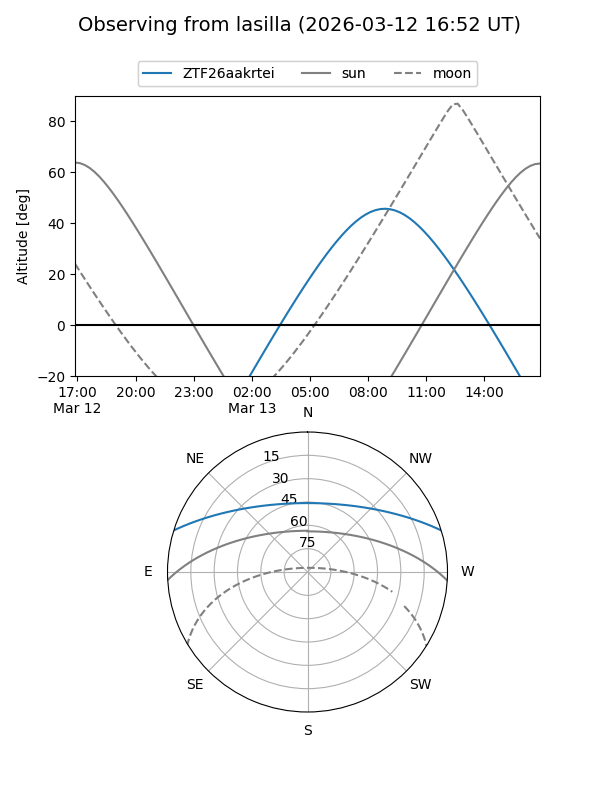
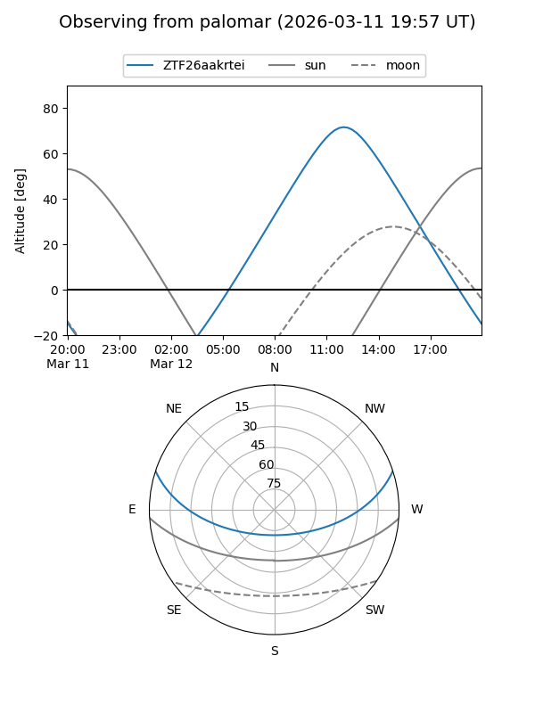

ZTF26aakrtei
Target ZTF26aakrtei at 2026-03-12 10:46
Aliases and brokers:
FINK: link
Lasair: link
ALeRCE: link
alt names
ZTF26aakrtei (ztf,fink_ztf)
Coordinates:
equatorial (ra, dec) = 232.8992,+15.13414
equatorial (HMS+DMS) = 15:31:35.80,+15:08:02.90
galactic (l, b) = (23.3678,+50.96761)
Flags:
Photometry:
last ztfg=19.54
1 ztfg detections
Lightcurve
Visibility


Additional plots